来源：https://puudjd7ny5.feishu.cn/docx/XHSEdD23AoNKfbxS9N0cWE7QnFf
从0开始，跟着生财航海入局本地生活1年+，赚到了钱，扩大了线下交友圈，原来这样也能赚钱，增长了见识，在现在坐月子期间，也能平均2万+/月，真的很感谢生财航海，现在到我回馈的时候了，我会分享全部从0到1的发生过程，项目能赚那些钱，是否还适合入局，选品和文案的建议，以及项目的误区
目录
我为啥做这个项目？
团购达人都能赚哪些钱？
我从小白到成手的三个阶段
这个项目是否还适合入局，适合谁入局？收入如何？
新人入局快速升级的秘籍！
我叫达师姐，是一个普通上班族，之前在上海搬砖，但感觉买房遥遥无期，即将30岁面对女性生育年龄限制，21年选择回东北小城，刚回来时很焦虑，因为我发现薪资还没有之前的零头多，月薪到手3k多，兜里有一定存款但不敢花，因为不知道这样的日子要熬多久，我享受这个小城市的安逸快乐，但又不满足它的薪资，所以开始探索副业，找1个人能做的且不花钱的项目
生财的航海有很多搜船，项目介绍我一遍一遍的看，但我都甚至看不懂项目是做啥的，其实就是太小白了，对市面上都有哪些赚钱的玩法一无所知，我看说抖音团购项目能白吃白喝，就上船了，跟着生财组织的小航海入局抖音团购2个半月，业余时间从排名10000+升到本市排名23，收入35万+，真的很感谢生财，让我在回东北老家后谋到新出路，现在主业➕副业，月薪3-5，既有钱又有时间还孕一个龙宝宝，比在上海时幸福感高了一万倍，回想起来在上海是为了生存，现在才是向往的生活
一个人/0基础/0资金/业余时间，我个人在这个项目上属于是0开始，所以经验很适合小白，具有普适性
0拍摄剪辑经验，对软件使用停留在美颜相机自拍上
0资金投入，连抖加也没买过
0新设备，就是自己用了4年的手机，赚到钱之后升级了设备
0团队运作，我一个人，刚开始先生有空就陪我，他不会拍摄，就做我的手机支架，后来他觉得太累不愿意去，我就基本都自己去，周六日有时候带徒弟去
cps+车马费+云剪辑费+To B推广+教别人学费+咨询红包，这个项目的好处是哪怕我在孕晚期不能出门拍摄，也没怎么影响赚钱，因为在家就能做
跟着航海起步，1000粉丝以上，开通团购达人，就可以开始带货了
刚开始还不知道其实可以在家里做云剪辑升级后，再出门探店，只知道要出去拍摄，我就都是自己花钱买东西拍，为了快点做出成绩，我一天安排了7.8个，给我先生吃到快吐了，有点埋怨说还没赚钱呢，花了不少。我理解毕竟没赚到钱嘛，但不高兴，所以后来我就都自己出门去探店
我在这个领域属于完全小白，同行里也不认识任何人，所以遇到的问题都非常小白
第一次探店的时候，紧张的要死，我也并非是面对镜头就人来疯的天选选手，首先进店就难死我了，怎么和店员说啊，人家能同意吗，说我一顿咋整，让我拍了我要咋拍啊，这个东西真的给免费吃吗，别人看我怎么办，他们一定会嘲笑我，我能行吗？我一直在店门口徘徊了40多分钟，那天我先生反复问我，你要不要去啊，我说要去啊，但就是腿不移动
后来一咬牙一跺脚的去了，发现真没自己想象的那么可怕，很顺利的就拍完了，还给我了几块拿破仑吃，那是我第一次真切感受到原来做探店达人可以免费吃喝是真的
拍摄依旧是咬牙克服各种心魔，但我卖的并不好，事实是啥也卖不出去，也找不到问题在哪，就傻傻的坚持，那个感觉挺难过的，看不见光，也不知道做的对不对，没结果，还在花钱（虽然都是我自己吃了）
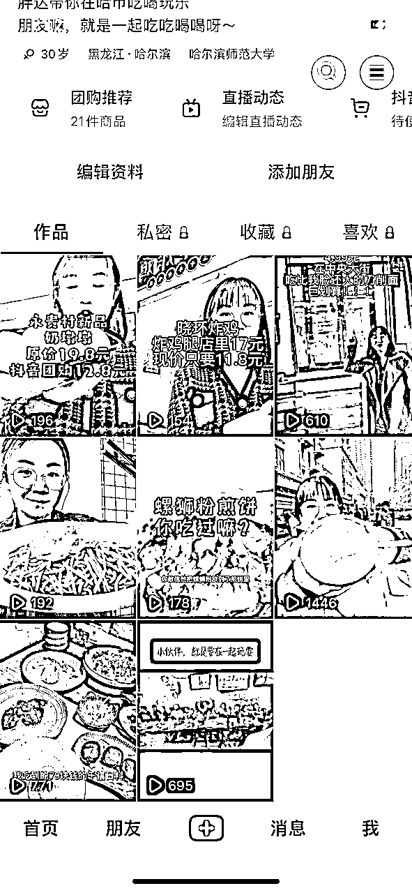
事情在一个月后出现了转机，之前只有100.200的播放量，提升到了上千上万，后来的订单量也开始增多，开始有佣金拿～
分析：1.账号经过一个月的养护，更垂直了，被系统打上了标签，2，选品至关重要，品的本身热度就高，说是我给他带货，但其实也是他给我增加热度，也就是谁卖谁都好，3，在文案上有了调整，把要突出的重点放在前面
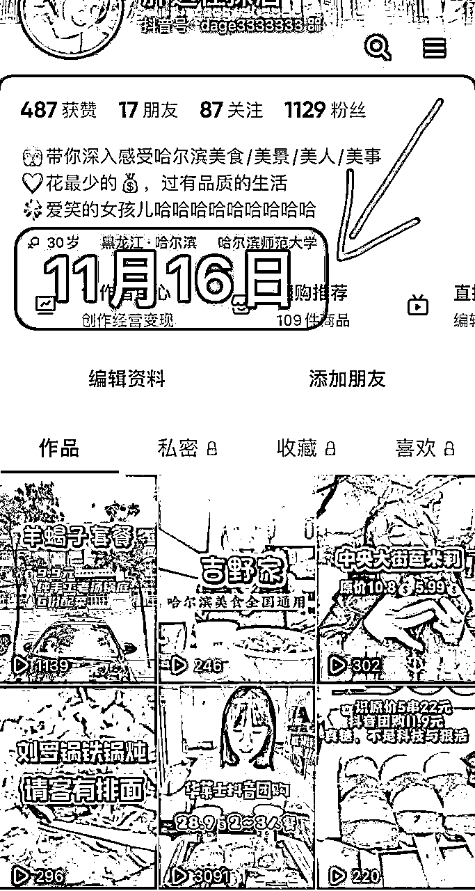
这个阶段一切都是懵的，误打误撞的往前走，甚至是不是往前走我也不确定，就是先做吧，我们总是希望一下场做就有结果，因为这种3天出10万+爆款的文章太多了，我们也会对自己有这个期待，但实际是我就是很普通，做了2个月也没什么爆款，好在数据有提升
12月，我开始出现一些小爆款，首次出现卖100单这种，甚至你会发现我连视频都没拍，也没到店，就在某书上找两张别人p好的网图，再做一下二次编辑，就卖出去116单，我有点惊讶于原来做项目也没那么难
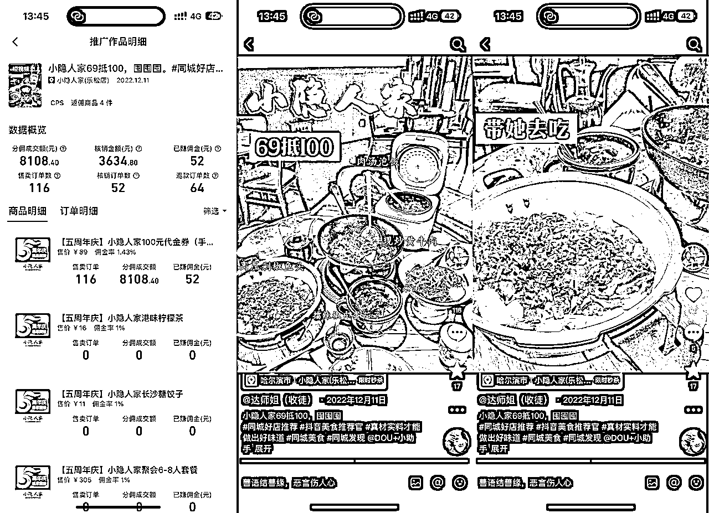
后来陆续有一些云剪辑出单，就是不实际到店拍摄，在家里根据网上的素材二次编辑，那时候我还不知道原来在家里剪片子，就有剪辑费拿
做了2个月的时候，第一次到店拍摄爆单了，2条视频卖了500单，但好巧不巧命运的捉弄，那阵子是疫情的爆发期，连老板都阳了，店关门了，我天天给老板发私信祝福他早日康复，结果就全是退单，才核销1/10不到，当时特别难过，觉得太不顺了，爆单却没有核销
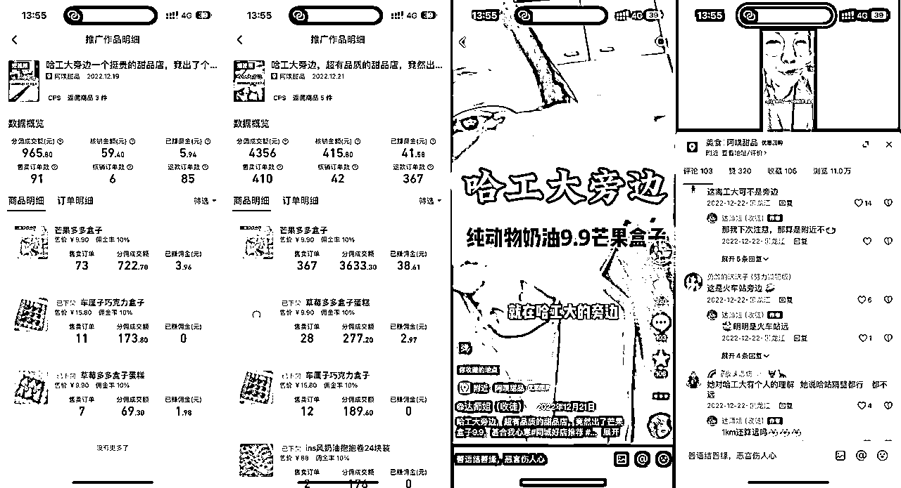
视频里，我把1公里距离，说成是旁边了，所以评论区都是骂我的
但这次爆单让我学到了一个重要的知识点，视频要有槽点，有槽点才会互动，有评论，有互动才会被抖音认为是优质视频，被推广到更高的流量池，有更高的曝光后，你才能卖出更多
所以每一条骂我的评论，我挨个去回复，那时候还不擅长怼，还是在解释
不要怕被骂，不要追求视频绝对正确，被吐槽也是好事
12月末的哈尔滨，接近零下30度，嘎嘎冷，冷到骨头缝里，东北的屋里又特别特别暖，在家里待着真幸福啊，上一周班儿了，特别不想出门，但又觉得副业还是得坚持做，哪怕这时候其实还没真正赚钱呢，那天我疯狂给自己打气，才走出门去，就是那天出门的一拍，直接把我送上5级，那时候是刚好入局2个半月，一条视频就让我带货力排名，冲进全市前30
单条视频收益2000多，看着火了，我赶紧又连续发了4条，5条一共收益3k左右（线下商家引导了很多退款，所以核销量很低，比较遗憾）
我把链接粘上来，大家可以去分析这个视频为啥火了【4.69 复制打开抖音，看看【达师姐（收徒）的作品】中央大街六桂福，足金黄金吊坠99💰，过年了送给亲戚... https://v.douyin.com/iLDx8Sj5/ 12/20 W@z.gO ATY:/ 】
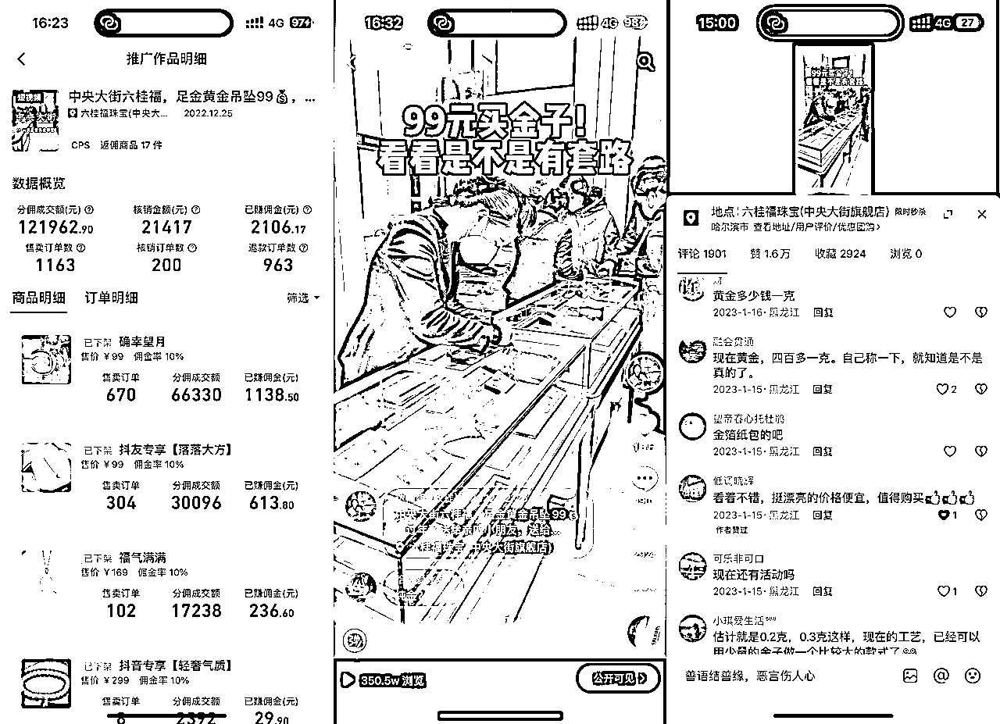
分析：
1、品有足够的吸引力，圈友@姚永刚之前就说过金子肯定好卖，当价格足够低，又是正规品牌，就有一种冲突，金子和不匹配价格的冲突，消费者会想知道真的假的
2、消费者探真假角度拍摄，我去了之后就是代表消费者，而不是个探店的，替商家说好话的，我抛出的问题，都是消费者真实想问的，99元金子是真的么？是足金的么？有啥套路么？通过几个问题解决了消费者疑惑，促进下单
3、视频长度一分钟内，我觉得视频长度不是非常重要的，只要你把你要表达的事儿说清楚了，时间长短只要消费者能看得下去，就是OK的
总结：品好+消费者想了解的内容=爆品
这时候级别上来了，但我深知我的能力与级别不匹配，我想死死的抓住这个机会，不能让上来的级别掉下去，我就每天刷手机，基本一天得3个小时，找品，找素材，在商单群里找商单
那时候疫情，基本没啥商家推广，群里都没动静，很多达人都躺平了，没活儿，但我每天都盯着，盯着群，盯着后台，盯着销售额，还在不断的扩大圈子，进更多的群，始终都没因为大环境不好而放弃
功夫不负有心人，1月爆单了一条视频，单条视频抖音+快手 佣金5千，让我真正震惊的，是这是23年1月的视频，一直在出单，直到现在24年1月还在出单，我开始意识到长尾流量的意义
长久的曝光=好品+好视频，这对商家和达人来说，是真正的共赢
这时候我还只是一个最初级的5级达人（一共7级），在圈子站不住脚，只能按照级别拿车马费+佣金，而不是自报价，自报价就是达人不按照级别接单，根据自己的粉丝数，出单数，级别等，自己定义价格报给商家
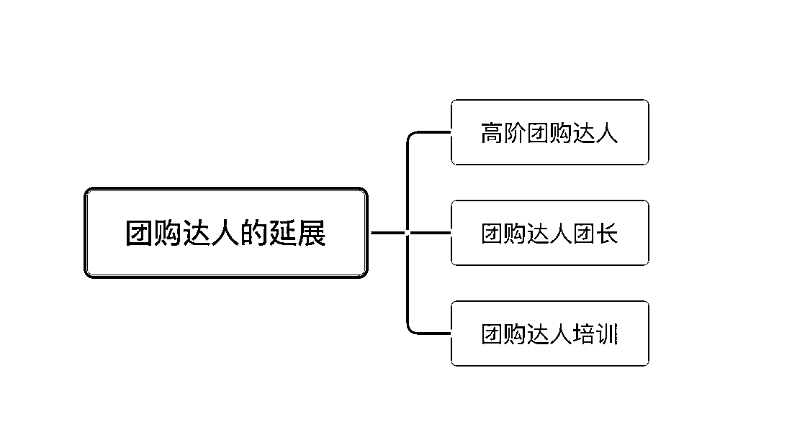
先在各个群里接单，然后登上榜单，长期稳定在榜单，被mcn和一些商家，以及达人团长注意到，单子从少变多，我每天要上班，只能利用中午和晚上，以及周末的时间拍摄，有时候一晚上接3个拍摄单子，回家要剪辑到12点多，时间长了我怕身体遭不住，再一个是希望提升自己单位时间价值，所以我提升了报价，单子量减少一半，收入增多，有更多的时间能去做别的事了
我合作的达人，几百到几千/条视频不等，我们花费相同的时间但产值完全不同，所以还是要不断的优化自己的视频，包装自己，提升单位时间价值。
我在1月份拿到一些成绩之后，我就在想我可不可以帮别人拿到成绩，就开始收徒弟，这样我就在团购达人之外，还能赚学费了
我就把自己在本地生活-团购达人这条路上的过程，每天呈现在朋友圈里，第一个月有了4个徒弟，都帮她们拿到了结果，这个带徒弟的过程，我发现我很擅长帮别人从0到1，我很能理解他们的困惑，卡点在哪，也知道怎么帮他们，所以很多天赋可能连我们自己也不知道，需要通过不断的做事去发现自己的天赋
收学员的渠道，朋友圈+抖音，陆续收了20多个徒弟，包含7.8年没上班的宝妈，职场高管，年龄从20多到40多，都百分百跑通了项目拿到了结果
这里我想说的是，不要觉得自己还没怎么会，没办法教别人，但真正的事实是大咖也教不了小白，因为他们早就忘了0到1会遇到的困难，甚至不能理解为啥这个也能是个卡点，他们也不屑于教小白，因为带一个小白的时间成本远大于他拍一条视频，但收益却是一样的，除非他是开了培训机构，那就不是他亲自教，那些真正教课的老师是否实战过，又是另一码事了
所以，如果你能从项目上拿到结果，也想带学员，就大胆去做，在没有成功案例前，你可以少收钱，但一定得收钱，因为性质不同，有交付责任和没有是完全不同的
也不用担心没人给你付费，因为这本身就是多尝试一条路，走不通你还有原本的路在走，而且只要你真诚的分享你做项目的过程，会有人被你的真诚打动
这个是指你帮助商家做矩阵推广，然后你给达人派单，相当于你是中间商，架起了商家和达人的桥梁，这里需要你有商家资源，了解不同达人擅长，以及各类型性价比等，来帮商家更好的配置，能赚差价
我在半年的时间合作了60多个商单，但我是个在本市没有资源，没有人脉，更在这个行业没有任何积累的小白，我是怎么拿到商单的呢？
因为我是榜单前一百的达人，所以长期展示的话，会有商家，或者mcn找到我，问我要不要接XX推广，我就会多问一句，你是否需要矩阵推广，我可以帮忙招募，我这边有团队，等等，就是多问一句
我原本的朋友圈子里，是没有任何人开门店做老板的，我有参加一个线下的演讲俱乐部，增大了人际交友圈子，圈子里有伙伴知道我是做这个的，当他们公司需要进行推广，他第一个找到我
这个是梁靠谱教我的，用增量思维，大方分钱，如果是朋友，我直接55分，大家一起拿钱，如果是陌生人第一次合作，我就送礼物，总之让人感觉和我合作不吃亏，下次有类似的事情，他还是第一个想到我，介绍给我，真正实现共赢
能拓展这么多商家，还有个很重要的事儿，是得把事儿办的漂亮，不要让你的上家觉得你不耐烦，你要认清楚自己的定位，比如我就是个中间商，那我得职责就是把达人管好，和商家对接好，如果商家有任何变化，我都能及时回复处理解决，经常半夜的时候出各种幺蛾子事儿，但我都不会觉得干嘛要这么晚找我，你怎么不早说，早寻思啥去了，这问题没法处理等等这种抱怨上家的事儿，我一直都认为这就是我的事儿，我来沟通解决，您稍等
所以有一些商家原本有认识的朋友做这个，他们也会选择和我合作，因为觉得和我合作不累，不用考虑情谊等问题，就直接和我提需求即可，而和朋友合作提要求可能会伤友情，所以有人脉反倒赚不到这笔钱
这就是团购探店达人的4种赚钱方式：
早期，只有cps佣金，1-2级
中期，赚车马费➕cps佣金，3级-5级
后期，赚车马费➕cps佣金+本地运营商+收徒弟陪跑，或者是培训
每天10分钟每天赚100的方法，需要反复练习，但一周内必能跑通赚到钱！
之前我怀孕在家待产，不方面出去探店拍摄，就在家里做怼脸视频，我躺在床上舔个大脸，不洗头不洗脸不换衣服，每个视频录个7.8秒，重要的是，没付出啥成本，这是非常重要的，不要一上来就要求自己拍的上镜，得穿好看的衣服，得洗头，得化妆，得口语表达能力好才行
不要这样要求自己！因为如果这样要求了，基本就放弃了，而是先跑起来，不管啥样的都行，先上车，先拍起来，最开始你找不到感觉，可能10个1个有成果，慢慢就是55分，在后面就是9个有成果1个没结果
更不要一开始就效仿那些很优秀的博主，我们都是普通人，都要经历从0到1的过程，可以加速没人可以跨越，所以一开始，就把难度系数调整到最低，也就是最小的mvp拿到市场上去试，反正没啥成本喽
怼脸视频的文案，如果你用好了，你会发现，其实啥文案的底层逻辑都一样
啥是怼脸视频？是云剪辑的一种，就是不去店里，随时随地能拍，镜头里主要元素，脸
这种就是怼脸视频，是我非常喜欢的博主，非常优秀
这个就属于怼脸的场景化升级，那我们今天讲，讲降级，哈哈哈哈哈哈，没错，降级，为啥要降级呢？
因为不够强呗，也因为省时间，更因为能持续做下去！！！（重点）
当这个项目没有为你带来太多产出的时候，大概率花费的越多就越容易放弃，所以我们要把撬动运转齿轮的难度降到最低，给你们看个降级版本的
哈哈哈哈哈哈哈哈，是不是感觉，就这？就这破玩意？
没错，别小看这破玩意，给你看看收益
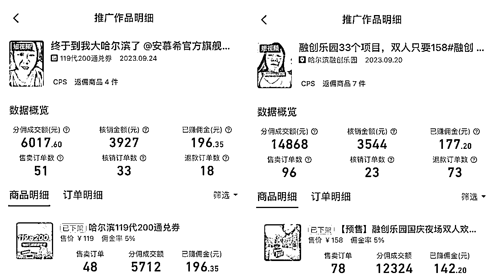
一条将近200佣金，每条视频制作成本不超过30秒，连剪影都不用打开，直接用抖音录制，加关键词，加配乐，发出即可
是不是信心大增？心想，我也行！没错，我认为这个项目好就好在，咱们普通人都可以做，随时随地能录制，走路拉屎都能干活，一天录5条，一条产出200就够了呗，一天的饭钱就出来了
⚠️怼脸视频，一共两个要点
1、从消费者角度出发，找到品的亮点
也就是，然后用户在几秒内就知道，这个品和我有什么关系？我为啥要买这个？我为啥要现在买这个？
那消费者关注的，一般都是什么呢？
划不划算？买了后面没去咋办？这玩意好吃好玩好喝吗？…..我打个比方
我先生在后面打电话所以我不敢大声说话，你看，哪怕家里有人，哪怕家里有人不能被打扰，也不耽误干活
这个视频里哦，你看没有一句是多余的，我先说了，XX之前不打折，现在有折扣了，目的是吸引这些人看看👀是什么优惠活动，然后把多少钱说了，票价只需要138元，这个价格是比平时要便宜很多的，接着，我知道很多人都是要带孩子玩的，这个票其实是个单人票，但可以带1.2以下的儿童入园，我就利用上这个特点，也当成一个亮点在说，也就是，明明是个单人票，但因为我的话术，换成一大一小一共138，表演一共是4场，但我看时间不够了，一紧张没说出来哈哈
从，吸引人看这个活动（之前都不打折的XX品牌），到这个活动的亮点（价格优惠），包含哪些内容（表演）
电商选品定生死，团购达人一部分探店赚车马费，所以接商单不能选品，但账号起步阶段，是能3天上5级，还是一年都上不去5级，在选品上就至关重要了
口播，以及在家剪辑，或者是别的形式的什么，都是选品为大，咱们不是人带货，咱们是货带人，我们没有能力，去把一个毫无热度，没有知名度的产品，卖爆，也无需这样做，又不是咱家开的店
我们只需要去找好的店，好的品，已经被大众知道，大家本来也很喜欢的品，去卖
那选品还有个关键点，就是佣金，不要去选那种卖了赚几毛钱的，那得卖多少才能赚100啊，而是选择佣金几块钱几十块钱的这种，我孕期不拍摄在家做简单低质量口播cps单号3K/月
有几个方法，都是我实践出来的，只要照着做，百分百有效
这里的选择注意一下，选择范围扩大些，而且要选短视频的，因为直播和咱们不是一个赛道
然后如果你的城市很小，没啥好品，没关系，你就选全国的，不管你在哪个城市，你是不是出差，你忙不忙，这些都不是你无法达成你目标的借口，反正就是所有的困难，都可以解决换个方式弥补
比如，哈尔滨的第一名极地公园，我会点开看几个关键信息
1、优惠力度大不大，我是否觉得很划算？
2、带货达人数和出单量的比例，带货达人比出单量还多，这就是不是个好品，这是硬拿钱砸的
3、佣金比例我是否满意
当地榜单前50的人，必有他的可取之处，你随便点开一个人，然后去关注他的【异常值】
哪一个视频点赞很高，看评论区能看出不是做假的数据
再看这个品，是不是现在依旧有，是不是你也觉得很划算，是不是能在网上找到素材？或者是品牌很大不需要素材直接口播即可，来做判断
一下子就能看到这个视频点赞多，然后点进去看
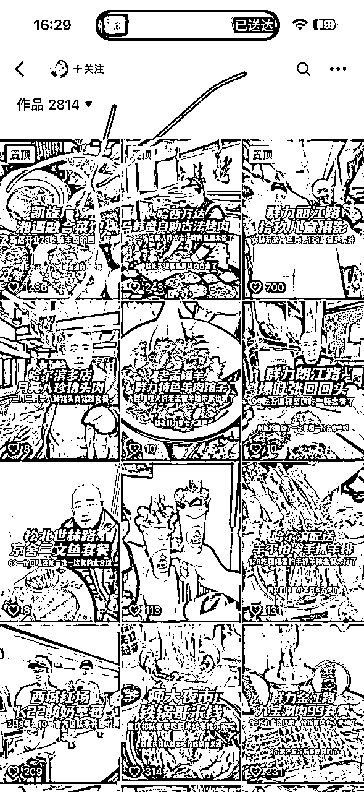
一下子就能看到这个视频点赞多，然后点进去看
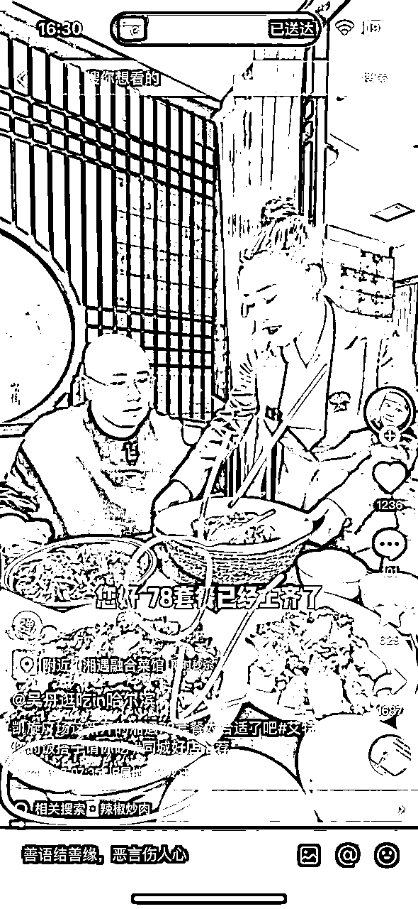
3.7号发的，也就是刚发的
78元套餐，都包含啥，划不划算
这个品我要推广的话，我咋推？我能在小红书上抖音上找到素材吗？
基本你心中就有数了！
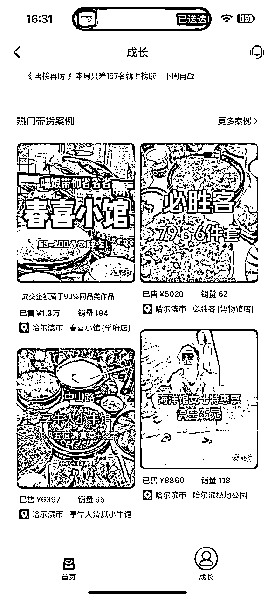
方法一样，这也是一个获取好品的渠道
当你常常看抖音团购探店类视频，抖音默认你喜欢此类视频，会给你推荐类似的视频，一般自动推给你的，让你心动的，一定要注意一下，你要觉察自己，哪里让你心动了（让你心动的，也会让别人心动，你也可以利用而让别人心动）
火过的，大概率还会火，所以没什么好做的时候，不妨翻找自己曾经的作品，那些小爆的重新剪辑，很可能还会爆
在别的池子里找鱼，不如在自己池子里找鱼更快
这一块可以拉出1分和1万分的差别，有一些需要刻意练习，也有一些我一说，你一调整，就能先达到60分，而60分其实就能跑赢大盘啦
为啥镜头表现力很重要呢？没有这块就不行吗？
也不是的哈，其实，选品-文案-镜头表现力，这三块，是相互扶助，也是三足鼎立的，如果镜头表现力差一些，其实可以用文案和选品来补救的，所以这块虽然重要，但不是说没有就嘎了的东西哈
如何提升镜头表现力呢？
人的大脑在接受信息时，图像比声音刺激更强烈，声音比文字更强烈，动态的图像+声音+文字，最为强烈
所以如果你想调动屏幕另一头的观众，你想吸引他的注意力，最简单的，你要动起来，别一张大脸怼着屏幕面无表情，你自己也不愿意看完的
可以通过这个对比，感受一下动和静的区别，20万流量和2千流量的对比
是不是很惊讶，没错，很多人录出来的视频特别傻，呆，捏，都是因为他在脑袋里想台词，背台词，而我们又不是天生干面对镜头训练工作的，所以当你又要面对镜头挑战，又要面对台词挑战时，就懵逼了，像个小学生在背课文叨逼叨的说台词，自然就无法呈现自然了
那么记不住台词怎么办？别整太长呗，记住，永远给自己设置自己可以攀登上去的台阶，不要设置比自己身高还高的台阶，望而却步
比如视频就录制个7-8秒的，一共也就3-4句话，不仅好记，而且还修炼了你的文案能力，且视频完播率也会更好
如果所3-4句话还是很困难，就一句一句录制，或者是不停的录完，再去剪辑，哪种适合你就用那种，适合指的是好坚持的，更容易做的
和尚念经会给人，内心平静的感觉，对吧，你会发现他念经都一个调～～～～～～，而你在听我是歌手时，你的心会跟着他唱的歌有波动，一会开心，一会儿甚至想哭，是因为歌手的歌音调起伏波动，变化很大，来抓你的情绪
这一块稍微有难度，是需要刻意练习的，你可以尝试着用，快点讲，慢点讲，大声讲，小声讲，偷偷讲，来做这种区分，也是非常有效的，只要你的视频里，有变化，那就是你有进步的
眼神是啥来着？心灵的窗口，咱小学都这样讲的，没错，眼神是可以帮你传递很多信息，能量，感受的
特别是怼脸视频，旁的信息比较少的时候，眼神更是被观众看的最多的地方了，所以，眼神灵动，你的眼睛会说话，都是会加分的
训练的时候可以尝试睁大眼睛，咋眼睛等等方式，哎妈呀这反正属于演员的课程系列了，你就知道这个东西也会影响镜头表现力即可
这是啥意思呢，就是当你其他几个要素咱们可能有欠缺的时候，可以借助场景来帮弥补
打个比方，那个肯德基视频，她是在车里两个人对话的方式，碳水方方有的是用假打电话的方式，东北雪很美，可以在雪景里录制，反正就是借助一切不花钱的外部场景力量，来帮你实现，更强的镜头表现力
刚开始一定会有点难，会有些镜头恐惧症，会害怕，会觉得别人看见了不好，会嫌弃自己录制的内容，不打紧的哈，这是一个过程，只要你每天录制10几个，一周时间你就褪去这种羞涩的新手感了
我还得强调下，其实怼脸视频你洗不洗脸，胖不胖，美不美，拍的好不好，都重要，但都没那么重要，重要的还是你有没有去做这件事！
你看我，胖了40斤，不洗脸，不洗头，就穿睡衣，不出门，文案不写，每个视频都是几秒钟的垃圾视频，我自己也知道这样的视频质量很低，作为创作者这是很丢人的，但是并没有影响日赚100，每天只需要10分钟，这个投入产出比我觉得很划算，那我就继续做
不管你是做团购达人带货，还是做自媒体IP，或者是其他的什么需要录制视频的工作，都是非常有用的，我看过很多IP的视频，内容还不错，但是镜头表现力太差了，甚至是负分，导致视频无法传播
最适合宝妈入局，性价比最高，因为宝妈本就要带娃出去玩，像我的私教学员宝妈说，她本就每周得带孩子玩，一个月至少得1千多，现在这个钱就省了，省了不就是变相的赚了嘛
而且带娃探店的过程中，孩子增长了见识，也提升了沟通表达能力，还增加了亲子关系
有些人在非一二线城市，三四线等抖音团购不那么发达的城市，这样的地区能做嘛？
是可以在家里做剪辑的，我认识两个，一个是宝妈全职带娃，空余时间剪辑，10几个号月入过万，还有个67岁的阿姨，3个号一个月2.3千
这种剪辑都是8块钱，15元，50元，70元/单，这么积累起来的，说白了都是辛苦钱
团购达人必须出门探店吗？分为2种：
1、在家不出门：做剪辑，赚剪辑费+赚cps，是有些全职宝妈带娃空余时间，只做剪辑，月入过万蛮正常的，辛苦钱但账号没啥价值，门槛低，也不需要成长迭代，谁都能干
有剪辑市场是因为，商家想做矩阵曝光，但都用实际探店（达人实际到店拍摄）费用太高，所以会由商家出素材，找一些达人来剪辑，根据等级账号质量不同，费用从几块钱到几十不等（几百的也有，但都是实探号）以及cps佣金钱，就是有人到店核销，你就可以赚佣金啦
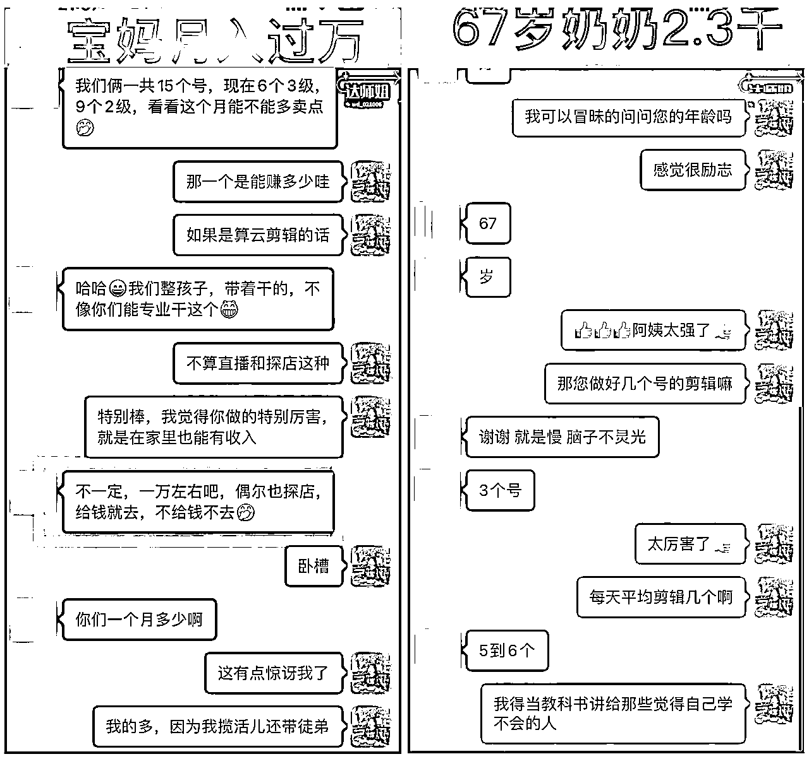
2、出门探店：这种赚的是车马费+cps，车马费会随着你的账号质量的提升，而上涨，账号恒久有价值，门槛低，但想做好需要成长迭代，需要不断进步才行
以我目前的见过的人，还没有赚钱很轻松的人，都是各有各的难，所以那些吹嘘赚钱轻松愉快的人，你要警惕
本地生活-抖音团购这个项目，真赚不到啥大钱，但因为没啥大钱所以大佬也看不上，普通人每月赚几千块小钱是没问题的，也都是辛苦钱，普通人想赚点钱，都是拿时间精力去换的，没人能一步登天
但好在赚钱会越来越容易，因为有积累，比如之前你是3级达人，只能赚几十块的车马费，但你成长为5级达人后，你可以赚几百块的车马费，花同样的时间，产生的价值不同了，你的时间更值钱了。
我刚开始就觉得，这玩意能卖出去吗，能有人给我点赞么，能有人关注我么，这视频我看到肯定不会点赞评论关注的，刚开始有人关注我我都觉得是不是抖音为了鼓励我，给我弄的假粉丝啊
别拿自己短浅的思维去评判这个世界，真实的世界就是啥人都有，喜欢啥的都有，你不爱点赞，就有人爱点赞
而且新人千万不要在意你的粉丝数，以及有没有很多点赞，其实这些都不重要，重要的还是有没有变现，卖出货赚到手佣金，不要本末倒置了
我有一条卖金子的视频火了，直接上了百万流量池子，我紧跟着发了一条一摸一样的，又火了，然后我重新剪辑了下，又火了，一共连续发了5条，热度逐渐递减趋势，直到消耗尽，才算是把这波流量接住了，蹭到了
自己的热点自己去蹭，自己不蹭别人也得蹭，还不如自己蹭
我见过很多综合能力很不错的赚不到主业以外的钱，真不是能力的问题，就是纯纯的心态问题，几块钱不稀罕赚，大钱又赚不到，然后反复碾压自己，自负又自卑，周而复始，啥也不是
事实上红利期的确已经过了，现在入场肯定不是最好的时机，抖音，快手都对探店达人已经没有额外的流量扶持了，但是我依旧得说这个项目是普通人选择开启从0到1的一个非常好的选择，因为门槛太低，又太好出单，随便拍点啥，就能出单赚到钱，亦仁说的，任何一个项目都有人赚100万
先去做，做出一堆狗屎，然后慢慢改
最后很感谢生财，我才有机会发现和做成这个项目，在整个孕期和现在坐月子，都不耽误赚钱，很感谢靠谱，一直用高能量指引我向前走，很感谢芷蓝，给我商业变现上的指导，祝圈友们都找到自己的项目，2024发大财行大运
下一篇写，起号全攻略，先在家里做云剪辑升级，赚剪辑费+cps，然后再转实探号，赚车马费+cps，还能吃喝玩乐